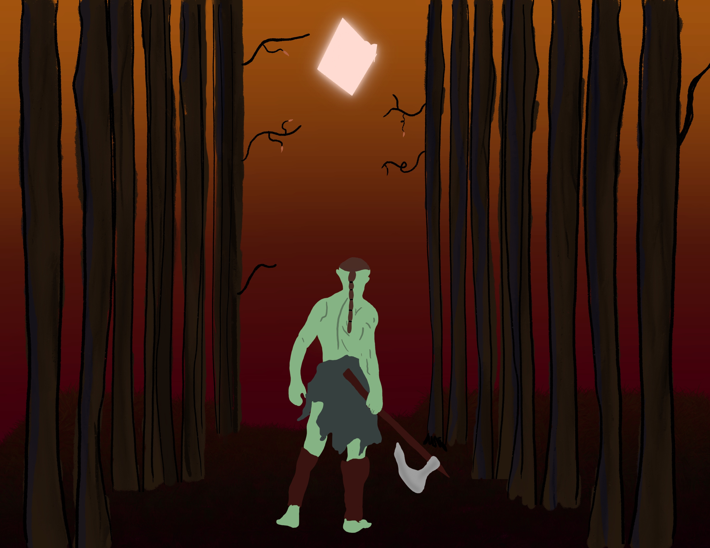

The warrior began walking through the eastern part of the Northwood forest (which is the path to Brinewood) when he began to hear the laughter of a small chid. He hid behind one of the trees and peaked around the corner and there he was. The child that was described to him. He waited until the boy has his back to him. The warrior burst out froom behind the tree and grabbed the boy. The Boy struggled to get free of his grasp but it was no use. Then the boy rememebered and old story his grandmother told him there was bush that had a flower and when blown at anyone it would cause them to itch uncontrollably!
